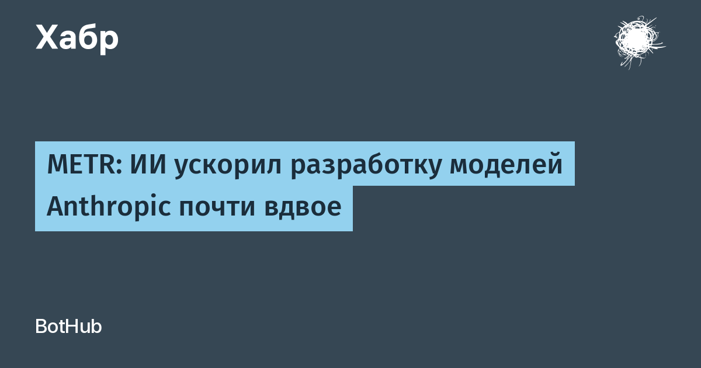

Независимая исследовательская организация METR с 12 августа по 29 октября 2026 года проводила «оценку с высоким уровнем доступа» внутри Anthropic — компания раскрыла аудитору внутренние метрики предварительного обучения, результаты усиленного обучения, вычислительные бюджеты и результаты трёх ещё не выпущенных моделей (в отчёте — Model 2, 3 и 4), а команда METR поговорила примерно с 15 сотрудниками. Главный вывод: с октября 2025 года показатели моделей Anthropic на бенчмарках (индекс AECI — аналог Epoch Capabilities Index от самой Anthropic) растут в 1,9 раза быстрее, чем в период с марта 2024 по октябрь 2025 года, с доверительным интервалом от 1,5 до 2,8. Грубо говоря, за последний год компания сделала примерно два года «исторического» прогресса. Больше половины этого ускорения, по оценке METR, даёт активное использование собственного ИИ в исследованиях и разработках; в пересказе на Хабре речь идёт примерно о 80%.
METR уверена: ускорение не связано с ростом масштабов обучающих вычислений. Основной прирост даёт не полностью автономная работа агентов, а ИИ-помощь на отдельных этапах: Claude пишет и проверяет код, запускает эксперименты, анализирует результаты. Один из исследователей оценил сокращение пути «от идеи до эксперимента» примерно в 80%, другой сформулировал так: теперь ограничивающие факторы — идеи и вычисления, а не написание кода. При этом сотрудники в опросах заявляли о росте личной производительности вплоть до 12 раз — но METR сама называет эти данные слабым доказательством: это субъективные ощущения, а не контролируемый эксперимент. Полностью автономного вклада моделей в ключевые этапы обучения аудитор не обнаружил, хотя видит первые признаки, что автономные задачи будут множиться.
Отчёт вышел на фоне сентябрьского призыва главы Anthropic Дарио Амодеи замедлить развитие ИИ, пока безопасность не начнёт успевать за возможностями. Метрики при этом говорят об обратном, а в разборе августовского отчёта Anthropic METR указала: компания, возможно, уже пересекла собственный порог раннего предупреждения об ускорении. Отдельная история — прозрачность. Anthropic оставила за собой право цензурировать отчёт и скрыла большую часть наиболее информативных доказательств, объяснив это опасением дать конкурентам готовую дорожную карту. Сооснователь Anthropic Сэм МакКэндлиш согласился с главным выводом, но признал: независимо перепроверить результаты из-за цензуры сложно. Ограничений, которые гарантированно остановили бы ускорение в ближайшие 12 месяцев, аудитор не нашёл — правда, с существенной неопределённостью.